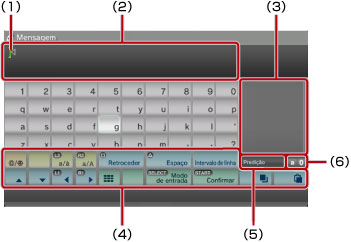
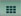
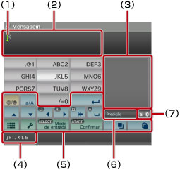

Sobre o menu XMB™ > Usar o teclado
Usar o teclado
O teclado é apresentado automaticamente sempre que for necessária a introdução de texto. Estas instruções pressupõem a utilização do teclado português. Para obter informações sobre como utilizar o teclado noutros idiomas, consulte o manual do utilizador para o respectivo idioma.

(1) |
Cursor |
|---|---|
(2) |
Campo de introdução de texto |
(3) |
Apresenta opções intuitivas |
(4) |
Teclas de controlo |
(5) |
Indica quando o modo intuitivo está ligado |
(6) |
Ecrã do modo de entrada |
Lista das teclas
As teclas apresentadas variam consoante o modo de entrada e outras condições.
 |
Insere um símbolo ou emoticon |
|---|---|
 |
Muda o tipo dos caracteres a serem introduzidos |
| Desloca o cursor | |
| Apaga o carácter à esquerda do cursor | |
| Insere um espaço | |
| Insere uma quebra de linha | |
 |
Copia ou cola texto |
 |
Muda para o mini-teclado |
| Altera o modo de entrada | |
 |
Confirma caracteres que foram digitados, mas não introduzidos / Sai do teclado |
Introduzir caracteres
Através do modo intuitivo pode introduzir as primeiras letras da palavra, sendo depois apresentada uma lista de palavras iniciadas por essas letras, utilizadas geralmente. Em seguida, pode utilizar os botões de direcção para seleccionar a palavra que pretende. Quando terminar a introdução do texto, prima a tecla "Enter" para sair do teclado.
Notas
- Pode não ser possível utilizar emoticons nalguns modos de introdução.
- Para a introdução de texto, pode utilizar os idiomas suportados pelo sistema. Por exemplo, se o idioma do sistema estiver definido para Francês, pode introduzir texto em Francês. Pode definir o idioma do sistema em
 (Definições) >
(Definições) >  (Definições de Sistema) > [Idioma do Sistema].
(Definições de Sistema) > [Idioma do Sistema]. - Pode limpar todo o campo de introdução de texto premindo os botões
 + L1 em simultâneo.
+ L1 em simultâneo.
Utilizar um teclado ligado ao sistema
Pode introduzir texto com um teclado USB ou um teclado Bluetooth® (ambos vendidos em separado). Se premir qualquer tecla do teclado ligado ao sistema quando o ecrã de introdução de texto for apresentado, este irá permitir que utilize o teclado ligado.
Notas
- Para obter mais informações sobre como ligar um teclado Bluetooth®, consulte (Definições) >
 (Definições de Acessórios) > [Gerir Dispositivos Bluetooth®] neste manual.
(Definições de Acessórios) > [Gerir Dispositivos Bluetooth®] neste manual. - Não é possível utilizar o modo intuitivo se utilizar um teclado ligado ao sistema.
- Pode introduzir uma quebra de linha no campo de introdução de texto premindo ALT + ENTER. Só pode introduzir uma quebra de linha quando é aplicável, como por exemplo quando escrever uma mensagem na categoria
 (Amigos).
(Amigos). - Pode limpar todo o campo de introdução de texto premindo SHIFT + BACKSPACE em simultâneo.
- Pode colar o texto que tenha sido copiado premindo Ctrl + V. Será copiado o texto que foi copiado em último lugar.
Utilizar o teclado em miniatura
Se seleccionar no teclado de tamanho normal, muda para o teclado em miniatura. No teclado em miniatura, vários caracteres são atribuídos a uma única tecla.

(1) |
Cursor |
|---|---|
(2) |
Campo de introdução de texto |
(3) |
Apresenta opções intuitivas |
(4) |
Apresenta caracteres que podem ser introduzidos através da tecla seleccionada. |
(5) |
Teclas de controlo |
(6) |
Indica quando o modo intuitivo está ligado |
(7) |
Ecrã do modo de entrada |
 , muda o carácter que pode ser introduzido. Por exemplo, para introduzir [L], seleccione e prima o botão
, muda o carácter que pode ser introduzido. Por exemplo, para introduzir [L], seleccione e prima o botão  para mover o cursor para a posição em frente a [L]. Em seguida, seleccione e prima o botão
para mover o cursor para a posição em frente a [L]. Em seguida, seleccione e prima o botão Nota
Também é possível utilizar o método de digitação de texto de toque único. Utilize a tecla "Opções" para alterar o método de digitação de texto. Quando utiliza o método de toque único, as palavras que podem ser criadas usando combinações feitas a partir de uma letra (ou número) em cada tecla seleccionada são apresentadas como opções de entrada de texto intuitivo. Por exemplo, se premir a tecla "DEF3", as palavras iniciadas por d, e, f ou 3 aparecem numa lista na janela de opções intuitivas no lado direito do teclado no ecrã. Se for apresentado o símbolo ">", continue a introduzir letras até que as opções intuitivas sejam apresentadas.
Lista das teclas
As teclas apresentadas variam consoante o modo de entrada e outras condições.
 |
Insere um símbolo |
|---|---|
 |
Muda entre maiúscula e minúscula |
 |
Insere uma quebra de linha |
| Move o cursor | |
 |
Elimina o carácter à esquerda do cursor |
 |
Insere um espaço |
|
Copia ou cola texto |
 |
Muda para o teclado em tamanho normal |
 |
Apresenta o menu das opções |
| Muda o modo de entrada | |
| Confirma caracteres que foram digitados, mas não introduzidos / Sai do teclado |